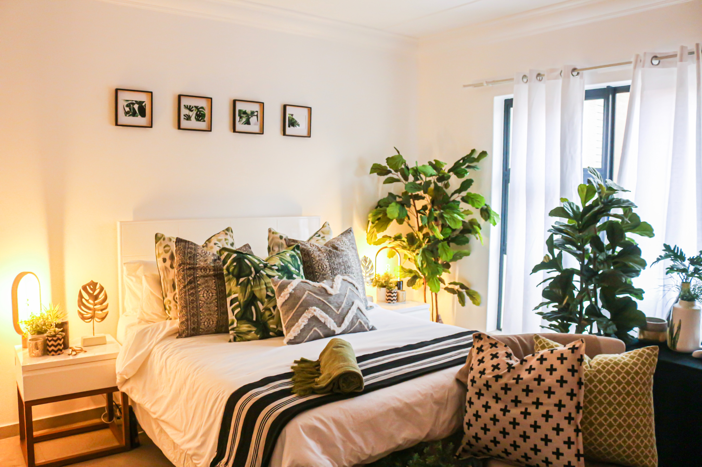
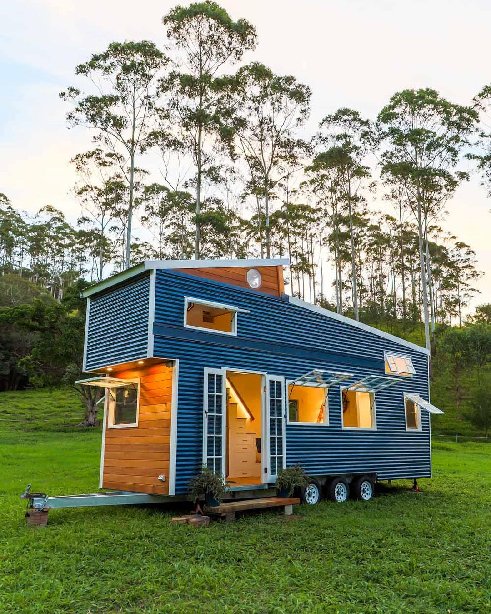
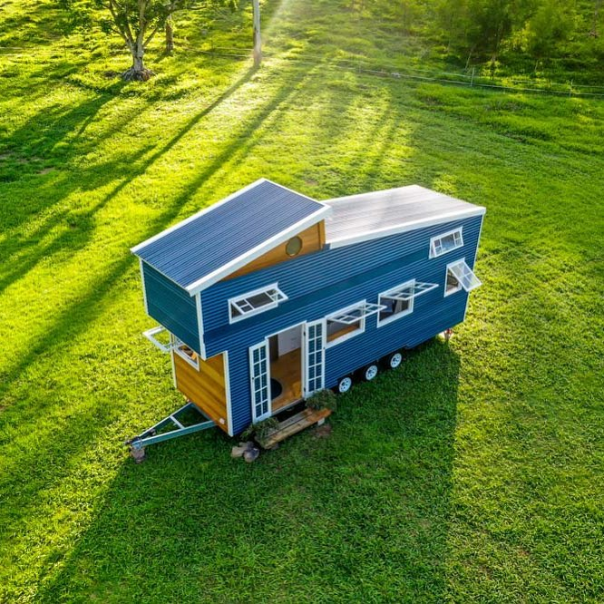
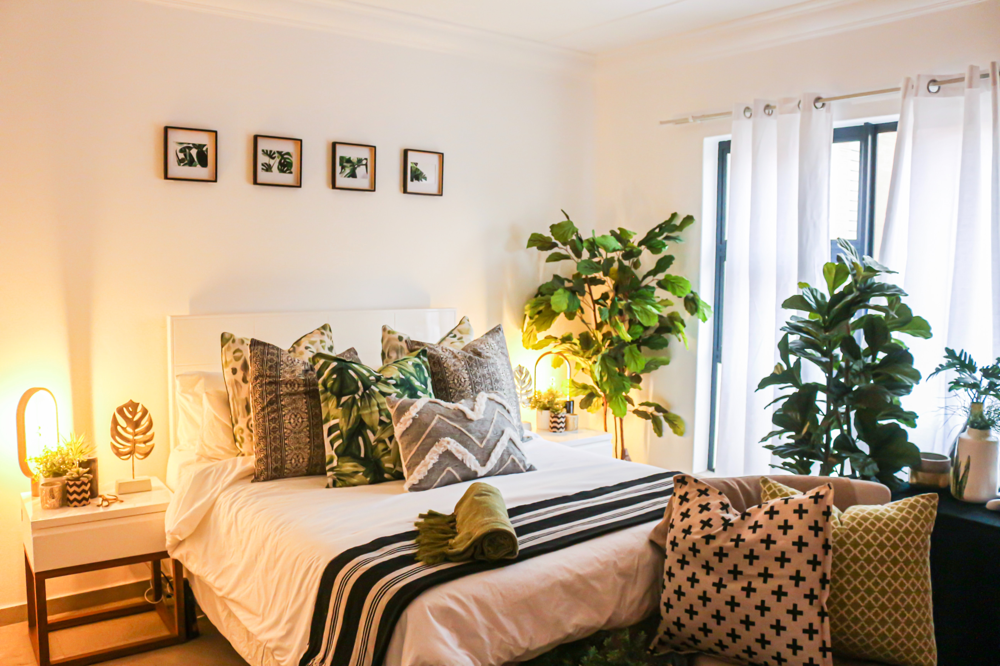
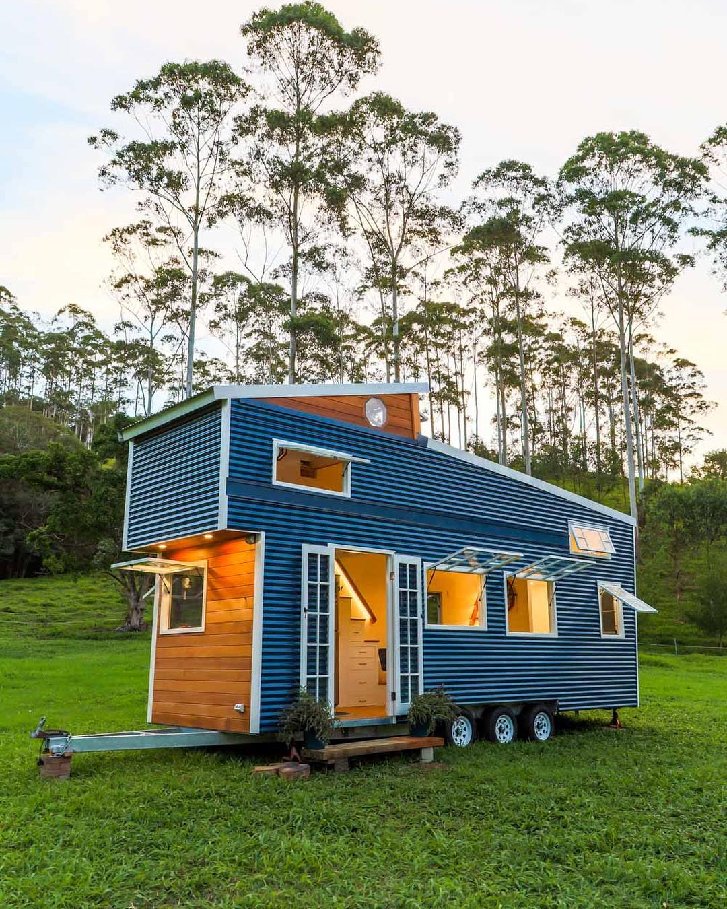
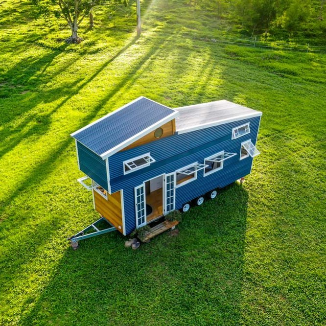

It's high time we talk about housing solutions in nigeria.
Have you considered going tiny?
Ever heard of minimalism?
Wanna do something different?
Shelter is one of the three basic needs of man and it remains a huge problem for most people in Nigeria. With a failed urban and even rural planning by the federal, states and local authorities, it has become obvious that the looming housing crisis across the country will continue to rise if urgent steps are not taken (and just so we know; the Nigerian Government is not one for calculated urgent response). The problems associated with rural and urban housing in Nigeria (Bisi Ogunwale-'Solving The Housing Problems in Nigeria') ranges from :
- Poor Legislation
- High cost of land
- Registration & titling
- Policy Formulation
While these problems may seem to concern prospective land/house buyers, there are more issues that comes to mind when housing and living in Nigeria is discussed. First is ELECTRICITY (yes NEPA ). Everyday life has advanced so fast that a home without electricity is just not right. Over the years, the major blame for poor power infrastructure has been on the federal government. However, with the innovation of solar energy, I believe it is safe to say the source is abundant in this part of the world and we must as a matter of urgency begin to tap into this infinite source of power.
Next is FUNCTIONALITY. This term may seem ambiguous but I'll try to break it down. Residential houses should be constructed according to needs and design preference of the potential occupants/residents. This is usually not the case in Nigeria and some part of the world because people tend to build based on what is known as normal/common/traditional and not really what they want and in some cases, not what they can afford. The tiny house movement has gone beyond the stage of infancy in countries like
- Australia
- New Zealand
- United States
- Canada
- Germany
- France
It is more like the internet; just because you haven't heard of it doesn't mean it is not in existence. A lot of young, middle-aged and older people are taking their future into their hands and getting into the tiny house movement.I mean, who wouldn't want to own a house right after college/university with a low income job? Especially in a country like Nigeria where the minimum wage is 30K Naira($60) per month, it is almost certain that most people that are lucky enough to get a job or be self employed can make enough money to buy a land and go even further to build a house on it. Times are changing, lifestyles are evolving, technology is basically in almost every part of daily lives, cultures are evolving, information is abundant. Why then must we continue to break our bones just to satisfy society rather than doing what we truly can and what we truly deserve and love. The tiny house movement opens a lot of opportunity for artisans, architects, local businesses and SMES to grow whilst providing goods and services needed for a tiny house build. The beauty of a tiny house isn't just economical but also it's compactness and top notch functionality and customisation by her owner. This is truly the future of affordable and modern housing.
As this blog continues to gain readers and active engagement, I will share more content on not only tiny houses but also
- Sustainable living
- Solar power
- DIY project
- Tiny house builds
- Sourcing materials
- Upcycling & recycling
While this new adventure may be fascinating and realistic for so many readers, it is important to emphasise that tiny house living is not and will never be for everyone. This will not be pleasing to some because of personal preference and other reasons and it is totally fine. It is important to know what works for you. However, you could be convinced and get to see the benefits of adopting a lifestyle that is sustainable, affordable and designed primarily for you and to your taste.
NOTE:
some images used in this webpage are owned by instagram user livingbiginatinyhouse
 




